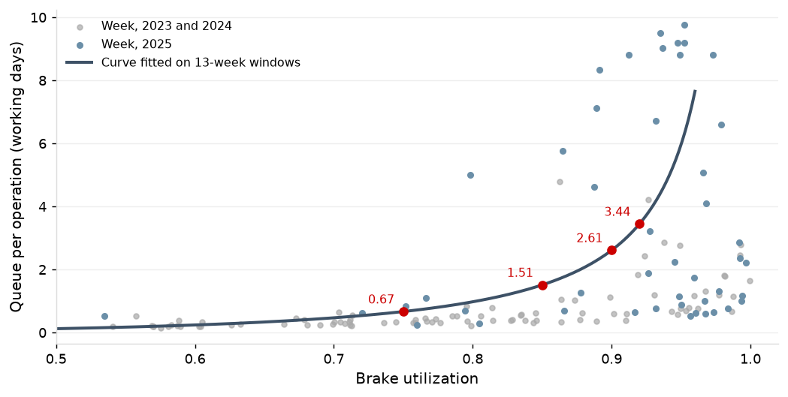
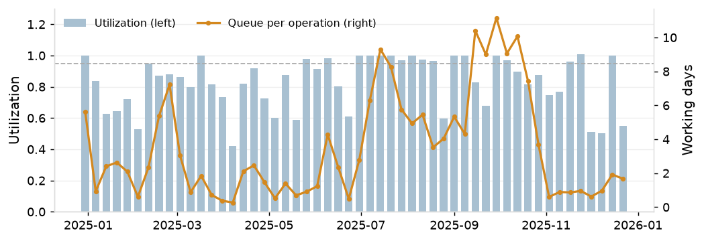

The brakes run at 0.91 of scheduled hours with a queue of 3.5 days per operation and a 90th percentile of 11.3 days (1.8 and 4.8 in Q2 to Q4).
Machine uptime is 0.96 to 0.98 at every work center and does not show where the load is.

Brake queue 90th percentile under 5 days in every quarter, the first included. Met in Q3 and Q4 2025 (2.8 and 3.0 days), not in Q1 and Q2 (17.1 and 9.1).

| Action | Owner | When |
|---|---|---|
| Take the P4 setup reduction and planned Saturday brake shifts as the capacity levers (P5); release leveling and dispatch rules were tested on the shop model and do not help | Plant manager | April 2026 |
| Trial a second shift on the robotic weld cell (P5, P8) | Production manager | April 2026 |
| Review the powder color schedule; a third day for black if the weld shift is not enough (P5) | Powder line lead | March 2026 |
| Reduce mean setup time at the brakes (P4) | Brake supervisor | March 2026 |
Measured baseline for 2025: brake utilization 0.91, queue 3.5 days per operation, 90th percentile 11.3; robotic weld queue 3.6 days at 0.83. Results of the countermeasures are reported in P4 and P5.
Weekly utilization and queue by work center on the operations dashboard.